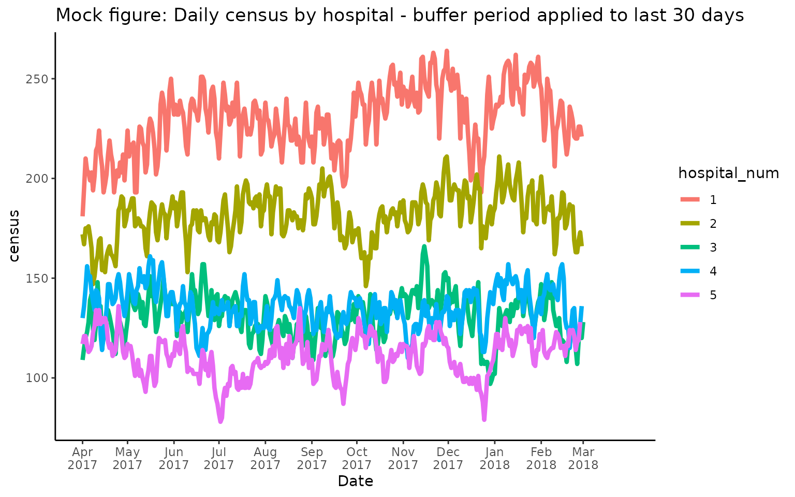

Daily Census
2023-08-15
daily_census.RmdOverview
The daily_census function calculates the number of
patients that were hospitalized at a given hospital on each day during a
time period of interest. The census provides a
cross-sectional count of patients that occupied a hospital bed at 8am
(by default) each day. Specifically, it is calculated as the number of
patients who were admitted before that time point and discharged after
that time point. The function also returns a capacity_ratio
indicating whether the number of patients on a given day was higher
(>1) or lower (<1) than on a typical day, where by default,
typical occupancy is based on the median census during the time period
of interest.
Note: Although this function can be applied to
different cohorts and research contexts, the interpretation of the
function outputs may vary according to the inputs users provide. For
example, if users pre-filter their cohort based on certain diagnosis
criteria, the census counts will only include those
patients, and similarly, the capacity_ratio would not
reflect a real indicator of capacity, but rather a measure of whether
occupancy is above/below typical occupancy for a certain group of
patients (also see section on group_var
input below).
Running daily_census() with default arguments
To run the daily_census function, users need to provide
an input table cohort containing all encounters that are
part of their cohort of interest. Typically, the cohort is created based
on the admdad table (or a subset thereof) in the GEMINI
database. It needs to contain the columns genc_id,
hospital_num, admission_date_time, and
discharge_date_time.
Here is an example of how to load the relevant data and run the
daily_census function with default settings:
# Load necessary libraries
library(RPostgreSQL)
library(DBI)
library(getPass)
# Establish database connection
db <- DBI::dbConnect(drv,
dbname = "DB_name",
host = "172.XX.XX.XXX",
port = 1234,
user = getPass("Enter user:"),
password = getPass("Enter Password:"))
# query admdad table containing cohort (could be filtered further if necessary)
admdad <- dbGetQuery(db, "SELECT genc_id, hospital_num, admission_date_time, discharge_date_time FROM admdad;")
# Run default daily_census calculation
census_output <- daily_census(cohort = admdad)
head(census_output, 10)Mock output table (for illustration purposes, not real data):
| date_time | hospital_num | census | capacity_ratio |
|---|---|---|---|
| 2016-04-01T08:00:00Z | 1 | 237 | 0.9834025 |
| 2016-04-01T08:00:00Z | 2 | 168 | 1.0181818 |
| 2016-04-01T08:00:00Z | 3 | 140 | 1.0294118 |
| 2016-04-01T08:00:00Z | 4 | 159 | 1.1521739 |
| 2016-04-01T08:00:00Z | 5 | 115 | 0.9913793 |
| 2016-04-02T08:00:00Z | 1 | 225 | 0.9336100 |
| 2016-04-02T08:00:00Z | 2 | 157 | 0.9515152 |
| 2016-04-02T08:00:00Z | 3 | 138 | 1.0147059 |
| 2016-04-02T08:00:00Z | 4 | 158 | 1.1449275 |
| 2016-04-02T08:00:00Z | 5 | 108 | 0.9310345 |
This table shows an example output for data from 5 hospitals from
April 2016 - April 2017. Each row corresponds to a unique combination of
date_time (with a reference time of 8am, by default) and
hospital ID (hospital_num). The census
variable indicates the count of patients that were occupying a bed at
8am each day at a given hospital. The capacity_ratio refers
to a relative measure of bed occupancy, which by default is calculated
as census/median(census).
Based on this table, users could extract further information, such as the median daily census at each hospital during the study period:
library(data.table) # we are using data.table operations below, but users could also use tidyverse to analyze the function output
# Compute median census at each site
median_census <- census_output[ , .(median_census = median(census)), by = hospital_num] | hospital_num | median_census |
|---|---|
| 1 | 241 |
| 2 | 165 |
| 3 | 136 |
| 4 | 138 |
| 5 | 116 |
Additionally, users could plot census and
capacity_ratio over time, separately for each hospital:
library(ggplot2)
# Plot census over time
ggplot(census_output, aes(x=as.Date(date_time), y=census, group = hospital_num, color=hospital_num)) +
geom_line(linewidth=1.5,show.legend = TRUE) +
scale_x_date(name = 'Date', breaks = seq(min(as.Date(census_output$date_time)), max(as.Date(census_output$date_time)), by="1 months"), date_labels = "%b\n%Y") +
ggtitle("Mock figure: Daily census by hospital") + theme_classic()
# Plot capacity ratio over time
ggplot(census_output, aes(x=as.Date(date_time), y=capacity_ratio, group = hospital_num, color=hospital_num)) +
geom_line(linewidth=1.5,show.legend = TRUE) +
scale_x_date(name = 'Date', breaks = seq(min(as.Date(census_output$date_time)), max(as.Date(census_output$date_time)), by="1 months"), date_labels = "%b\n%Y") +
ggtitle("Mock figure: Daily capacity ratio by hospital") + theme_classic() +
geom_hline(yintercept=1)Note that capacity_ratio fluctuates around 1 (= typical
occupancy) where values > 1 correspond to days with higher occupancy
than usual.
Optional input arguments
time_period
By default, the function will calculate the census for the whole time
period that is available in the cohort table. Note that
data availability may differ by hospital, and the function will
determine data availability individually for each site. If users only
want to calculate the census for a certain time period within their
overall cohort, they can provide an optional time_period
input specifying a start and end date.
For example, to calculate the census from June 1, 2016 - Dec 31, 2016:
# Compute census for specific time period
census_output <- daily_census(admdad, time_period = c("2016-06-01","2016-12-31")) Note that in this case, the capacity_ratio is calculated
based on the typical occupancy observed during that same time period
(i.e., between June-Dec 2016).
scu_exclude
By default, the total duration of each encounter’s hospital stay is considered in the census counts. However, for certain projects, it may be of interest to exclude any time points where the encounter was in a special care unit (SCU), such as intensive care (ICU). This is relevant if researchers want to analyse bed occupancy at a particular medical ward (e.g., GIM) and only want to count patients who were in fact occupying a bed in that ward on a given day, while excluding any patients who were in an SCU.
In that case, users should provide an scu_exclude table
that contains all SCU encounters that should be excluded from the census
calculation. Note: The SCU table typically refers to the
ipscu table in the GEMINI database, however, users may want
to further filter that table by relevant scu_unit_numbers
that should be excluded from the census counts. The function
automatically removes any entries where
scu_unit_number = 99, which refers to encounters with
"no SCU". Additionally, only SCU encounters with a valid
scu_admit_date_time and
scu_discharge_date_time can be excluded from the census.
Availability of these variables is low for certain cohorts and SCU
units. Therefore, users are advised to carefully inspect the SCU table
to make an informed decision about whether to exclude SCU encounters,
and if yes, which SCU entries to exclude.
# exclude SCU encounters from census
scu <- dbGetQuery(db, "SELECT * FROM ipscu;")
# Compute census excluding SCU
census_output <- daily_census(admdad, scu_exclude = scu)
group_var
By default, the census is calculated separately for each hospital (by
hospital_num). Users can specify additional grouping
variables to obtain patient counts (and capacity ratios) for subgroups
of interest, such as different medical subservices or physicians.
Here is a simple example where census is grouped by patients’ gender and age (<65 vs. 65+):
# Create age category
admdad$age_cat <- ifelse(admdad$age <= 65,'<=65','>65')
# Compute census by gender & age categories
census_output <- daily_census(admdad, group_var = c("gender","age_cat"))
head(census_output,10)Mock output table showing census grouping by age & gender categories:
| hospital_num | date_time | age_cat | gender | census | capacity_ratio |
|---|---|---|---|---|---|
| 1 | 2016-04-01T08:00:00Z | <=65 | M | 27 | 1.0384615 |
| 1 | 2016-04-01T08:00:00Z | >65 | M | 87 | 1.0235294 |
| 1 | 2016-04-01T08:00:00Z | <=65 | F | 28 | 1.2173913 |
| 1 | 2016-04-01T08:00:00Z | >65 | F | 95 | 0.9500000 |
| 1 | 2016-04-02T08:00:00Z | <=65 | M | 23 | 0.8846154 |
| 1 | 2016-04-02T08:00:00Z | >65 | M | 90 | 1.0588235 |
Note that capacity_ratio in this mock example should not
be interpreted as a real “capacity” indicator, but rather, as a measure
of whether on a given day there were more (>1) or less (<1)
patients of a certain age/gender than on a typical day.
Capacity_ratio is more useful for grouping variables that
correspond to separate medical entities, such as different medical
subservices or wards, where capacity_ratio can serve as an
indicator of system load vs. capacity. Nevertheless, grouping variables
that are based on patient characteristics (age, gender, diagnosis group,
illness severity etc.) could be useful to analyse the case mix of
hospitalized patients during certain periods of time.
capacity_func
By default, capacity_ratio is defined as
census/median(census), which is calculated separately for
each hospital and grouping variable (if any). That is,
capacity_ratio refers to the daily count of patients
relative to typical bed occupancy, where typical bed occupancy is
defined as the median census during the time period of interest.
Alternatively, users can specify other measures of central tendency to
obtain typical occupancy (“mean”, “mode”) or
estimate capacity based on the maximum occupancy
(“max”).
# Get occupancy relative to max capacity (estimated based on max(census))
census_output <- daily_census(admdad, capacity_func = "max")
time_of_day
By default, the census is calculated at 8am each day during the study
period. For example, to obtain the patient counts for April 1st, 2016
the function counts all patients with
admission_date_time <= '2015-04-01 08:00:00' and
discharge_date_time >= '2015-04-01 08:00:00'. Users can
specify a different reference time by providing an optional
time_of_day input:
# Calculate census at 2.30pm each day
census_output <- daily_census(admdad, time_of_day = "14:30:00")
buffer
For time periods that are towards the end of the data availability timeline of a given hospital, users may observe a pattern similar to this, where census counts suddenly drop at the end of the specified time period:
This effect is due to a truncation bias that can occur if the end of the specified time period (here April 2018) is close to the last available date in the overall cohort (e.g., the cohort only contains encounters up to April 2018 in this example). Note that cohorts are typically defined by discharge date. That is, if a cohort includes data from April 2017 - April 2018, it will only include encounters that were discharged during that time. As a result, there may be patients who were admitted during the last week of April 2018, but were not discharged prior to the end of the month. Therefore, they are not part of the cohort, and cannot be counted towards the census.
To prevent this from biasing the census and
capacity_ratio estimates, the function automatically checks
for data availability at each hospital based on the min and max dates in
the cohort input table. If data availability ends prior to
(or at the same time as) the end of the time period of interest, a
buffer period of 30 days is applied by default. Specifically, the last
30 days at each site will be set to NA. The default setting
of 30 days is based on the observation that the vast majority of
hospital stays are < 30 days, and therefore, we can be confident that
patients who where hospitalized 30 days prior to the end of the
specified time period have already been discharged (i.e., are included
in the cohort).
The default setting of buffer = 30 will result in the
following output, which removes the truncation bias shown in the
previous figure by setting the last 30 days of the time period to
NA:

Users can specify other buffer periods (in full days) based on their cohort (and the typical length of stay observed in that cohort). For example, to set the buffer period to 10 days, run the following code:
# specify buffer of 10 days at end of time period
census_output <- daily_census(admdad, buffer = 10) Note: In this example, if users specify a time_period
input that ends 10 days earlier than the latest available data, the
buffer period will be ignored and all available data will be used to
calculate census for the time period of interest. In other words, the
actual buffer period that is applied within the function depends on a
combination of the specified time period, data availability per site,
and the buffer argument in order to ensure that the maximum amount of
available data are used in the census calculation.
Calculating customized measures of capacity
In addition to the flexibility provided by the function itself, users
may want to obtain additional capacity indicators that are currently not
supported by the function. For example, researchers may want to
calculate capacity_ratio relative to the typical occupancy
on a year-over-year basis. The function calculates
capacity_ratio by estimating typical (or max) capacity
based on census numbers throughout the whole time period. However, the
census may vary on a year-by-year basis. In that case, users could
either run the daily_census() function separately for each
study year, or they could run the function on the whole time period and
calculate a year-over-year capacity_ratio based on the raw
census output provided by the function, e.g.:
# calculate capacity_ratio based on median census *per year*
census_output[ , year := year(census_output$date_time)]
census_output[ , capacity_ratio_yoy := census/median(census), by = c("hospital_num","year")]Similarly, users could define other indicators of typical occupancy that are currently not supported by the function (e.g., trimmed means).